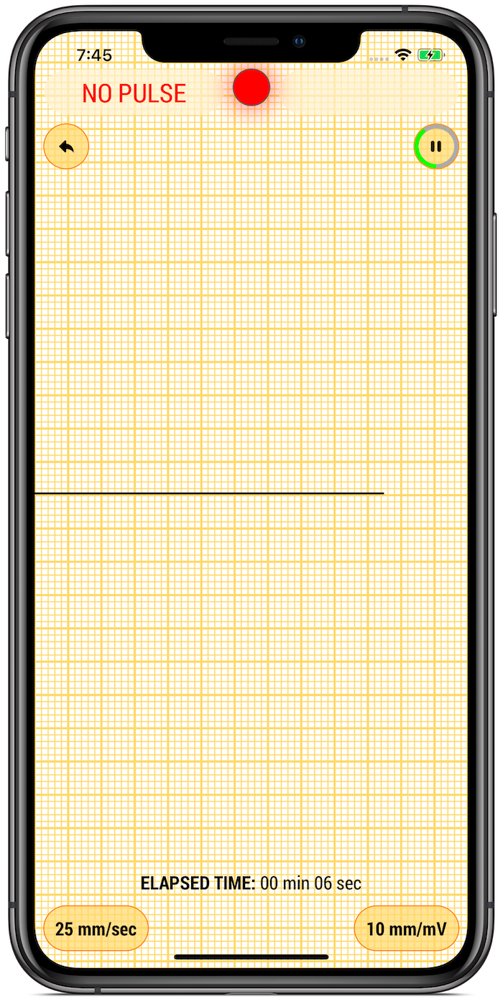

First aid «FA mob»

Download the free FA mob app for iPhone from the App Store.
Download free apps
Download the free FA mob app for iPhone from the App Store.

Download the free «ECG mob» app from the App Store or Play Market.
Remove the protective coating from the adhesive electrodes (save it by placing it in the case) and glue the electrodes on your wrists, with the electrode attached to the black button, glue to the left wrist, and attached to the red button to the right wrist. Connect the ECG monitor to your smartphone. For first aid, place the ECG monitor next to the victim, make sure that the holes for sound output are on top. To control cardiac rhythm disturbances, in a sitting position, do the following actions yourself.
Launch the application (click on the FA mob icon), the application start page will appear. Then click on the “Start” button, a page appears on which the process of the victim’s heart is displayed.
In the event that the heart is working, an electrocardiogram (ECG) will move on the smartphone screen and “HAS PULSE” will appear. If the heart has stopped, then instead of the ECG there is a straight line and the inscription "NO PULSE" appears, in this case you need to immediately begin to give the victim a heart massage and artificial respiration. The effectiveness of these actions must be constantly monitored on the screen of the smartphone.
Launch the application (click on the ecg mob icon), the setup pages will appear (setup is done once). Here you enter: last name, first name, gender, date of birth, set the recording duration to 30, 60 or 180 seconds and write the address to which you can send the ECG for decryption. To register the ECG, press the round button with the image of the ECG.
After recording, a page with an ECG in PDF format will appear. If you want to send your ECG to the specified address, click the "Send" button. An email application page appears with an ECG attached. Here, also click the "Send" button. You cannot send the ECG, but go to the cardiologist's appointment and show him the recording in your smartphone.